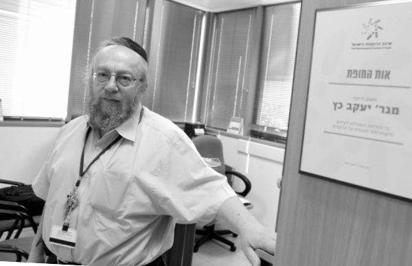

Medicine with a Mission
R’ Yaakov Katz wears “two hats” – Chief Pharmacist of the Israeli Ministry of Health of the Central Region and unofficial shliach of the Rebbe at the Ministry of Health, two quite challenging jobs. * In a fascinating discussion with Beis Moshiach, R’ Katz told of his life in a small town in England and how he became involved with Chabad, about his job as Chief Pharmacist and a Chassid who travels in the rarified world of highly educated health professionals who are for the most part very distant from anything Jewish.

The sight that met my eyes was no less than astounding. Alongside the 770 building in Kfar Chabad were parked, one after another, a long row of expensive cars. Out of the cars emerged older, distinguished looking Jews who quickened their pace and disappeared inside. They headed for the last room on the first floor for the weekly shiur in Chassidus that would start in a few minutes. The shiur is given by the shliach to Ohr Yehuda, R’ Shlomo Katz.
The one who has hosted and organized the shiur for the past ten years is his father, R’ Yaakov Katz. His official job is Chief Pharmacist of the Central Region in the Ministry of Health. In his less official position he is a shliach at the Ministry of Health. Those who attend the shiur are all senior pharmacists who come from cities in the center of the country. They were not given a Jewish chinuch and some of them were even taught to hate religion. Yet they will do anything to make sure they don’t miss a single shiur.
“These pharmacists recently opened a virtual forum in which they call themselves ‘Pharmacists Chassidei Chabad,’ says R’ Katz with obvious delight. “It’s hard to imagine that most of them were born in Bulgaria and Romania and were not given a Jewish education. There are also kibbutznikim who didn’t even celebrate a bar mitzva, but today would postpone flights and forgo important meetings so as not to miss the weekly shiur.”
***
R’ Katz told me about a series of kiruvim (signs of closeness) that he received from the Rebbe along with clear answers that guided him in life until his present position.
We met R’ Katz, known as Yankele to his friends, in his office in the Health Ministry office in Ramle. Just a few minutes prior, the hustle and bustle of people coming in and going out was quite audible; colleagues, officials, pharmacists and doctors, come to the office of the man who has the final word in his department. We met a dynamic Chassid who makes a Kiddush Sheim Lubavitch every day.
ENCOUNTERING JUDAISM IN LITTLE SUNDERLAND
Yankele was born in the early 50’s in a small town near London, where his grandparents fled to from the German blitz of London. His family kept the current traditional version of Judaism – synagogue and fasting on Yom Kippur. The children were sent to public school and they did not cover their heads.
“In those days, there were hardly any Jewish schools,” he says in his parents’ defense. His maternal grandfather, even though he conducted himself not at all religiously, founded a synagogue saying that he could not live in a city without one. After founding the synagogue, he looked for someone to run the place and serve as chazan and Torah reader. “The person he found suitable received a nice monthly salary from my grandfather and a place to live in my grandparents’ home.”
That rabbi made a shidduch for the grandfather’s daughter, who was R’ Katz’s mother:
“‘Why isn’t your daughter married?’ the rabbi asked. My grandfather told him that after the war it was hard to find suitable young Jewish men. The rabbi told my grandfather about a single cousin of his. My grandfather agreed to check him out. My parents met and decided to marry. My father wasn’t what you’d call religious, but since he came from a very religious family, he put on t’fillin and was particular about kashrus to the best of his ability.”
In those days, there wasn’t much religious Judaism in England. Very few were punctiliously observant. Many Jews mingled with gentiles.
R’ Katz describes his school days as a farce. “Today they call it ADHD, but then I was called the class troublemaker.”
His interest in Torah and mitzvos began to blossom once he became bar mitzva:
“Apparently my t’fillin aroused something within me. My father told me about mitzvos. I began reading Jewish books and my interest in Judaism continued to grow. I began keeping Shabbos to the extent of my knowledge and tried to keep what I could and what I knew.
“My serious journey began when I finished high school. I went far from home to Sunderland, near Scotland, in order to study pharmacology; it was a field that I had heard could earn me good money.
“In Sunderland, I found a young Chabad couple who were sent there by the Rebbe, R’ Yehuda and Mrs. Refson. I was invited to them for Shabbos and Yomim Tovim and loved it. For the first time in my life I was having a full, authentic Jewish experience.
“My brother was also very interested in Judaism and he introduced me to his rabbi, R’ Shmuel Lew, who was sent on shlichus to London. From the two of them I heard about the Rebbe and Chabad Chassidus for the first time.”
FROM PHARMACY SCHOOL TO YESHIVA
There was also a Litvishe rav in Sunderland, from the Ehrentreu family. He headed a yeshiva there. R’ Katz’s encounters with him also had a great influence on him:
“We met one day. It was after I had completed my first degree in pharmacology, and he said to me, ‘Yankele, you must attend yeshiva.’ This shocked me. ‘Yeshiva? I know enough to be a good Jew,’ I replied. But he insisted and I attended his yeshiva for a while.
“In the yeshiva library I found s’farim in English. One of them had many Chassidic tales. I read the book from cover to cover and felt drawn to it.
“When I left Sunderland, I returned to London and settled in Golders Green. The first thing I did was look for a shul or yeshiva, and there too I met Lubavitchers, shluchim of the Rebbe, including R’ Herschel Goldman who translated the Tanya into English.
“After several conversations, he suggested that I fly to see the Rebbe. I already knew a thing or two about the Rebbe, and I told him that I not willing to be seen in the Rebbe’s presence without first spending at least a year in yeshiva. I was a fresh baal t’shuva who operated from emotion. R’ Goldman liked my approach and had a practical suggestion for me, to go to Eretz Yisroel and attend R’ Shneur Zalman Gafni’s yeshiva in Kfar Chabad for baalei t’shuva, Ohr T’mimim.”
When I asked R’ Katz what appealed to him about Lubavitch he said:
“There was a pivotal moment. It was a few months before the Yom Kippur War and R’ Refson gave out coins for tz’daka to the Jewish children. He told us that the Lubavitcher Rebbe said there was a heavenly accusation against Eretz Yisroel and we should give tz’daka and pray. Nobody understood what this was about. Some dismissed it. But then the Yom Kippur War began and I remembered what the Rebbe had said. That is when I realized that the Rebbe is not just another rabbi but a leader from whose mouth emerges the word of G-d.”
R’ Katz went to Eretz Yisroel at the beginning of 5736 and learned in Ohr T’mimim:
“It was hard at first, but I was determined. I did not know either Hebrew or Yiddish and acclimating was complicated, but R’ Gafni did all he could to sweeten the bitter pill for me. R’ Gafni is a real gaon, a p’nimius’dike Chassid, who turned me from a searching baal t’shuva into a Lubavitcher Chassid.”
In Tishrei 5738, R’ Katz went to the Rebbe for the first time:
“It was both a lofty experience as well as a difficult one with all the crowding and irregular meals. As someone raised on British orderliness, it wasn’t easy for me, but with Hashem’s help, I managed.”
R’ Katz returned to England after Shabbos Parshas Noach in order to check out a shidduch prospect. He became engaged on the last night of Chanuka.
THE REBBE AND LANIADO HOSPITAL
After marrying, the Katz couple moved to Kfar Chabad where Yankele learned in Ohr T’mimim’s kollel. In order to obtain an Israeli degree in pharmacology, he had to be in the army. After receiving the Rebbe’s bracha, he served in the army. His service included the Lebanon War. He served in a field hospital that opened in Lebanon, near Beirut. When he finished his service as an officer, he wrote to the Rebbe that he had gotten a job offer at Laniado Hospital in Netanya. The Rebbe approved the offer.
“When the director of the hospital realized that I am a Lubavitcher Chassid, he told me an amazing story which I heard from other staff members who had been present when it happened. A group of directors and senior doctors from Laniado went to see the Klausenberger Rebbe zt”l, the founder of Laniado Hospital, who was living in the US at the time. They were six men in the delegation. When they arrived in New York, they decided to meet with the Lubavitcher Rebbe too. They were given an appointment at two in the morning.
“Their plan was to ask for a bracha and leave. As soon as they walked into the Rebbe’s room, one of the men introduced himself. The Rebbe said he had heard of the hospital. One of the men said, ‘We came to ask for a bracha.’ The Rebbe gave a bracha and then asked a question. The question had to do with a room on the ground floor on the right side. The Rebbe commented that they had bought a machine from Holland that checks blood for a very high price, and the number of tests it could do was 340 an hour. ‘Why didn’t you buy the same machine in Belgium? It would cost half as much and its output is much better.’
“The delegation was stunned. The Rebbe did not stop with this question. He went on to make a virtual tour of all the rooms in the hospital. He reviewed all the deficiencies and what needed fixing. The director told me that the Rebbe even knew where they had bought the hospital sheets for the beds. They left the Rebbe’s office at five in the morning, in shock. How did the Rebbe have all this information?
“From Crown Heights they traveled directly to the Klausenberger Rebbe who was living in Williamsburg. They told him about their meeting with the Rebbe. When he heard their report, his face glowed and they could see he was moved that the Rebbe was so involved and knew everything that was going on with his institution.”
When R’ Katz worked at Laniado, he wasn’t yet an expert in shlichus the way he is today, but he tells one story that shaped his approach to spreading the wellsprings:
“There was a nurse who worked at the hospital who was quite anti-religious. One time, when we got to talking, I told her, ‘I know you think we are antiquated and primitive, but at least light Shabbos candles.’
“She looked at me angrily and said in Yiddish, ‘You think I’m a goy? What Jewish woman doesn’t light Shabbos candles?!’
“This incident underscored for me the idea that every Jew has a G-dly spark, a part of G-d above. I always tell my colleagues, fly wherever you want in the world but order kosher food, and they listen. People are becoming inspired; their inner spark is becoming more and more exposed. It is not hard to ignite it.”
DOING WHAT THE REBBE WANTS
When he stopped working at Laniado, the Katzs decided to move to Yerushalayim:
“Of course I wrote to the Rebbe about this. The answer was to check t’fillin and mezuzos. For some reason, I checked the mezuzos but not the t’fillin. This was in 5748 when the Rebbe announced the ‘Year of Building’ and we decided to buy our own home. We saw a new apartment that was under construction. We liked the location, and despite the cost we decided to sign a contract.
“A Chassid doesn’t make a move without asking the Rebbe so we wrote to the Rebbe time after time but did not receive a response. One night, I called R’ Groner and asked him why I did not get a response. He asked what the answer had been when I asked about moving to Yerushalayim. I said, ‘Check t’fillin and mezuzos.’ He asked whether I had done so. I said just the mezuzos had been checked. ‘So what are you complaining about?’ he asked. ‘Do what the Rebbe told you.’
“I thought this might be the reason and the next day I went to the sofer, R’ Avrohom Lifschitz, so he could check my t’fillin. It turned out that my Rashi t’fillin were pasul. I asked him to write me another parsha and he agreed. I entered his home with pasul t’fillin and left with kosher ones.
“On the way, I decided to pass by the building which was under construction where we wanted to buy an apartment. The contractor was there and he told me that he wouldn’t keep waiting endlessly for us to decide.
“After talking to him I went to a neighbor and called my wife to tell her about the t’fillin and the pressure from the contractor. As soon as she picked up the phone and heard that it was me, she said excitedly, ‘Yankele, R’ Groner called two minutes ago and said he has a positive answer for us from the Rebbe about the apartment!’ I was flabbergasted. The Rebbe’s answer was delayed until I checked my t’fillin. Of course we signed the contract right away.”
UNOFFICIAL SHLIACH
In Yerushalayim, R’ Katz went to work at Hadassah Ein Kerem hospital.
“In a meeting that I had with R’ Gafni, he told me there are two types of Chabad houses. There is a Chabad house that has signs and a Chabad house that has no signs but everyone knows about it. I couldn’t hang up signs because the hospital was not my building, but I adopted the second approach.
“A few days after I decided to do the Rebbe’s shlichus, a senior doctor met me in the hall and told me that he was going to Dublin. He wanted me, as a Lubavitcher Chassid, to find out where there was a shul and where he could eat kosher food. ‘Although I don’t look religious,’ he said with a wink, ‘outside of Eretz Yisroel I proudly display my Judaism.’
“With time, people from the administrative staff and the doctors learned that I was someone they could turn to. People began bringing me their t’fillin and mezuzos for checking. My job included giving the chemotherapy medication. When I packed it up along with the medical information, I would tell the patients about the importance of saying T’hillim and strengthening their observance of Torah and mitzvos.”
R’ Katz recalled a moving story from his job at Hadassah:
“Before Shavuos 5749, I went to 770 with my son Shloimy for the first time. Before we went, I went around to all the departments to suggest that the employees write to the Rebbe. I went to a department run by a religious nurse. I asked her if she wanted to write to the Rebbe. She said, ‘No thanks. I already have a two and a half month old son.’ I did not understand her answer. I figured that my English accent made me incomprehensible and I tried again.
“To my surprise, she gave the same answer and said that she had married ten years earlier and two and a half years went by without her becoming pregnant. Her husband suggested they write to the Rebbe and they did so, and received his bracha. A year went by and their son was born. After another two and a half years they wrote again and they had another child. After another two and a half years they wrote again and they had a baby two and a half months earlier. ‘Now do you understand why I don’t need a bracha?’ she asked.”
A SURPRISING OFFER
By 5753, R’ Katz felt burned out. He wanted to progress in his field and he had several options. He could go back to London and complete his doctorate or do his doctorate at a university in Yerushalayim.
“On Lag B’Omer of that year, I was in 770. I discussed my indecision with the Rebbe’s secretary, R’ Klein, and asked him to ask the Rebbe what I should do. This was after 27 Adar and the answers were not detailed.
“A few days went by without my receiving an answer. I went with my son to the Ohel to pray at the Rebbe Rayatz’s grave that I should merit a response. When we returned to 770, R’ Klein came over to me and said that the Rebbe’s answer was not to pick either option. What I expressed my bewilderment, R’ Klein said, ‘If you want to listen to the Rebbe, don’t do anything now.’
“A few months went by and I saw how far-reaching the Rebbe’s vision is. The chief pharmacologist at the Health Ministry made me an offer I could not refuse, to be the chief pharmacologist of the central region. I agreed on the spot. There were many who hoped for this position; they found it hard to accept that someone else had gotten the job and a frum person no less. This even ended up before the court which dismissed the case out of hand.”
When I asked what the job of a regional pharmacologist entails, R’ Katz said:
“Eretz Yisroel is divided into six regions. Each region has a regional doctor, a regional psychiatrist, and a regional pharmacologist. We are responsible for all medications in our region. The port in Tel Aviv and the airport at Ben Gurion are under our jurisdiction. We have to make certain that only approved medications enter the country. We supervise all the pharmacies, give permits to pharmacists, and approve the opening of new pharmacies.”
I asked R’ Katz what advantage a Lubavitcher pharmacist has over others. He said:
“First, it makes a great Kiddush Hashem when people see a Chassidic Jew with the proper credentials in a position like this who does not concede on any point of Halacha. Second, there is the shlichus element. We care about the Jewish people. We believe that wherever we are, our job is to do a material and spiritual favor for another Jew. In my work I try to combine the two – the material, providing the correct medication, along with spiritual strengthening.”
R’ Katz added:
“As I mentioned, at first there were many people who were annoyed when I got the position and tried to prevent it. After all, I had not come from the right kibbutz and I hadn’t served in the right army unit and I wore a kippa. What more indicated that I wasn’t suited to this job? There were people who did not stop at anything in order to torpedo this appointment. However, I felt that I was in this position on the Rebbe’s shlichus.
“One day, I wrote to the Rebbe through the Igros Kodesh and asked for a bracha. The answer was astounding. The Rebbe’s letter wished someone success in his new position and said the person should utilize his position in order to inspire Jews about their Jewish identity and to spread the wellsprings. This answer encouraged me tremendously. I felt that the Rebbe had brought me to this position and had designated for me a shlichus which I am trying to carry out.
“One of the first decisions I made was to check that there were mezuzos, not just medications, at all pharmacies. I check to see whether the mezuza is kosher and in nearly all cases we change them to better ones.”
We started the article with the weekly shiur that R’ Katz organized. I asked him to tell us about it.
“The initiative for this shiur came from one of the pharmacists whom I asked to put on t’fillin but he refused. I asked him why, and he said that he had never had a bar mitzva. A week later we invited many of his friends, about 150 people, to the 770 building in Kfar Chabad and we made him a bar mitzva with davening and his first aliya to the Torah. That is when we launched the shiur.”
For many pharmacists, the shiur is just the beginning, the introduction to a magical world of Chassidus and making commitments in Torah and mitzva observance. “There was a pharmacist who joined me on a trip to the Rebbe for Shabbos Mevarchim Kislev. He was very impressed and I decided to strike while the iron was hot. I asked him where will he go from here, and he asked me what I meant. I said, make a good hachlata. We sat and thought and finally, this fellow who looked distant from Torah and mitzvos went with me to a Judaica store and bought t’fillin. He promised to use them every day.
“A few months later, I was invited to his son’s wedding. The wedding took place in a modest home in Tel Aviv in the middle of the day. I was in the shlichus spirit and I asked all the guests to put on t’fillin and we would start with the groom. The uncle of the groom said I should start with his brother. I told him that his brother puts on t’fillin every day on his own with t’fillin that he bought. He did not believe me.
“We brought the brother over and he confessed and told about visiting the Rebbe. ‘If Chaim puts on t’fillin,’ said the brother, ‘then I believe Moshiach is about to come.’ The brother himself went around to the tables and repeated this line and got many other people to put on t’fillin. ‘If Chaim puts on t’fillin, how could you not put them on?’ he asked those who were a little harder to convince.”
R’ Katz tells amazing stories that happened to participants of the shiur who write to the Rebbe about every problem or business decision.
“People don’t make a move without asking the Rebbe. If a pharmacist wants to expand or close, buy a place or rent, he will do so only after receiving the Rebbe’s bracha. The answers people open to are astounding. These are intelligent people, seasoned businessmen, not the type whose faith precedes their intellect, and they get clear answers from the Rebbe.
“There was a pharmacist who wanted to open another pharmacy. His wife was adamantly against it. At the end of the shiur he wrote to the Rebbe about his plan. He did not mention his wife’s opposition. In the answer he opened to, the Rebbe wrote that he should listen to his wife. He was shocked and he told us that the Rebbe had answered his question since the Rebbe was siding with his wife.
“Another pharmacist had rented a building for years for his pharmacy and had gotten notice from the landlord that he had to leave. This notice came after the landlord had been bothering him for a long time. Until then, he had been in Rishon L’Tziyon and had done very well, but his plan was to open a branch in Modiin. I told him that this plan seemed sound, but he should write to the Rebbe. The Rebbe’s answer was that he did not understand why he needed to leave a successful place to go to something uncertain.
“I told him that from the Rebbe’s answer it seemed he should stay in Rishon L’Tziyon. Even I did not imagine what would develop.
“The next day, the pharmacist called me all excited. His landlord had called and dropped all his complaints and agreed to extend the lease for a long period of time.”
***
To conclude, I asked R’ Katz how he was able to see that the Geula is coming in his particular field. He answered:
“You see a gathering of people who are not the type to attend a shiur, yet they don’t miss a shiur. People are interested, they ask questions, and they relate to what they learn. One of them recently told me, ‘It’s a pity I didn’t know you ten years ago. All my life, whenever I saw a religious Jew on the street coming toward me, I crossed to the other side so I wouldn’t spit in his face.’
“We see today that there is no real opposition to Torah and mitzvos. We need to go with Jewish pride and show that even the last vestiges of opposition have no real lasting power. People are interested and we don’t need to be shy about talking about Moshiach. People are receptive to everything today.”
REBUKE OUT OF LOVE IN FRONT OF THOUSANDS OF PEOPLE
REBUKE OUT OF LOVE IN FRONT OF THOUSANDS OF PEOPLE R’ Yaakov Katz relates: When I arrived at 770 for the first time, Tishrei 5738, I did not know what was permitted and what was forbidden. I was a new baal t’shuva. I had a camera and I innocently walked into 770 one day of Chol HaMoed, got a good spot in the second row near Rabbi Mentlick and Rabbi Chadakov, and got ready to photograph the Rebbe when he walked in. I had no idea that (at least in those days) this was not acceptable. A few minutes went by, the Rebbe walked in, he motioned to the crowd and I took pictures. I got seven beautiful pictures but then the Rebbe suddenly turned his gaze in my direction. In a fright, I jumped down. The Rebbe loudly asked whether I had said Chitas and I said I had. My answer was conveyed by Chassidim who stood between me and the Rebbe. The Rebbe asked, “Today?” I said yes, but I had a little more to finish since the way I did it was that I first learned the shiurim in Lashon HaKodesh and then I translated them into English. The Chassidim heard me and told the Rebbe I hadn’t finished it. Then the Rebbe asked, “Which is better, to sit and learn Torah or to take pictures in a holy place?” After Maariv I had this terrible feeling that the Rebbe was annoyed with me. I decided to go upstairs and wait for the Rebbe and apologize. I did not understand why, along the way, I saw so many Chassidim sitting and learning Chitas. One Chassid said to me, “See what a z’chus you have. Look at how many people are learning the shiurim in depth, thanks to you.” But that did not serve to make me feel better. I headed for the secretaries’ office. R’ Groner listened to what I had to say and agreed that I should write a letter and submit it to the Rebbe. That same night I received a response, “I will mention it at the gravesite.” After that, I did not show those pictures to anyone for many years. My son once prepared an article for Beis Moshiach and wanted to include one photo. He wrote to the Rebbe through the Igros Kodesh and the answer was negative. The Rebbe still did not want them to be publicized. My father a”h kept one of the photos in his briefcase until his passing. Something I recalled much later is that the answer to the first letter that I wrote to the Rebbe after I became involved with Chabad was, “Surely he knows about the three shiurim.”
THE REBBE’S THANKS AND BLESSING
A significant part of R’ Katz’s work is one on one. Many of his colleagues have a personal relationship with him and consult with him: Mr. Eli Horowitz, director of the big pharmaceutical company Teva, died two years ago. A decade ago, he signed a big purchasing contract with the pharmaceutical company Promedico. He did this in the presence of someone I knew well, Mr. Alex Eisenbach, in Switzerland, and it seems there were some clauses that were not clear. That was enough for the Israeli tax authorities to ask for a larger slice of the pie, with an additional charge of tax evasion in the amount of many millions. The government charged both Horowitz and Eisenbach. A day before the court case, a case that all the financial columns were following, Alex came to me extremely worried. “Listen, I am not a youngster. I just turned 75. If I am sentenced to jail, that’s the end of me. I won’t be able to survive there.” He was very pessimistic about his chances, and I wanted to encourage him. During the conversation, I was reminded of an extraordinary story that he had told me, a story that he had had with the Rebbe. This chevraman, in his youth, studied pharmacology at a university in Damascus. As he studied, he spied for the Haganah. Under the guise of a student, he traveled to all the Middle Eastern capitols and reported back to his superiors. After the establishment of the State, he fled from Damascus and settled in Tel Aviv. The government wanted to reward him for the help he provided. There was no pharmacology school yet in the nascent country and he had a year left to complete his degree. So someone in the government decided to sponsor his boat trip to an exclusive university so he could finish his studies in Boston. This was at the end of the War of Independence. Friends, neighbors and family members went to say goodbye, including Mrs. Schneersohn, the wife of R’ Aryeh Leib, the Rebbe’s brother. She gave him a pile of papers and asked him, when he got to New York, to stop off at 770 and give them to her brother-in-law, Ramash (later to be the Rebbe). He took the exact address and the papers and promised to do her this favor. The next day he was on the ship on his way to New York. As soon as he arrived, he went to Crown Heights, to 770. He asked where Ramash lived and people showed him. He knocked at the door and Rebbetzin Chaya Mushka opened the door. She took the papers from him and apologized, saying that the Rebbe was busy and couldn’t speak to him, but if he came back in four hours the Rebbe would have something to say to him, she thought. When he returned, the Rebbetzin opened the door and apologized once again. “My husband is with my father now and cannot come to the door, but he asked me to convey his deep thanks and a blessing in all things.” At this point, I said to Alex, “You helped the Rebbe. We, as Chassidim, know that the Rebbe does not remain in debt. The Rebbe will help you.” The next day, the court case began and the reporters were astonished to hear the judges exonerate the accused of everything. That same day, Alex came to my office, excited and emotional. If I hadn’t known him as a serious person, I would have thought he was hallucinating. He said that as soon as he walked into the court room, he saw the Rebbe himself sitting on the judge’s chair for several minutes. When he saw this, he knew that the Rebbe was there to help him as was subsequently proven to be true. ***I just came back with a group of pharmacists from the gravesites of the Chabad leaders. There was one pharmacist from a kibbutz who did not stop crying from emotion. He has recently been taking his first steps in the world of t’shuva, and he is one of many. Quite a few of them have already visited 770 and one of them takes pride in having been to 770 five times.
Nosson Avrohom. "Medicine with a Mission." Beis Moshiach, no. 917 (February 28, 2014).